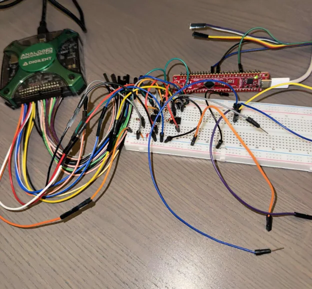
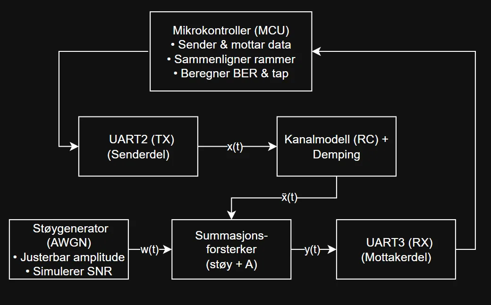
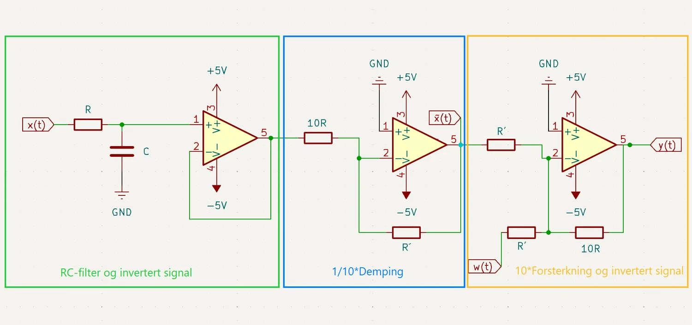
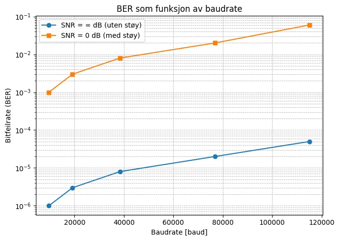
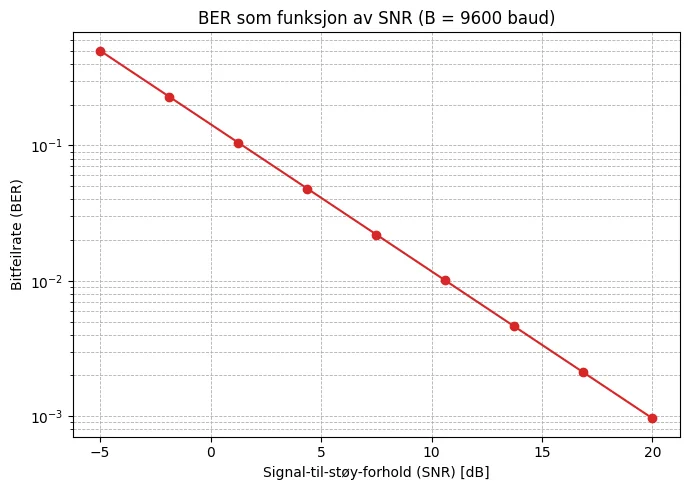

DP7 Testbenk for kabelkommunikasjon
Testbenk som modellerer en kabel mellom to bygninger og måler bitfeilrate og pakketap i UART-kommunikasjon.
Problemstilling
Hvordan påvirkes bitfeilraten i kabelbasert UART-kommunikasjon av baudrate og signal-til-støy-forhold? Siden kabelen ikke fantes ennå, ble det bygget en testbenk som modellerer demping og støy.
Omfang
- Kanalmodell for demping og støy, med bitfeilrate og pakketap som mål.
- Egen driver og testprogram i C for mikrokontrolleren.
Figurer









